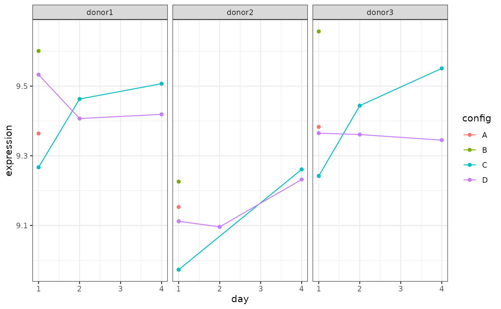

Get Started
multilevelmod.RmdThe multilevelmod package is a parsnip extension package for multi-level models, which are also known as mixed-effects models, Bayesian hierarchical models, etc. The models wrapped by the multilevelmod package tend to have somewhat different interfaces than the average R modeling package, mostly due to how random effects and independent experimental units are specified.
This vignette is an overview of how to fit these models. For brevity, we only discuss linear models but the syntax also works for binomial, multinomial, and Poisson outcomes.
We’ll use some single factor repeated measures experiment data from the contrast package, on stem cells from three donors.
library(contrast)
library(tidymodels)
library(multilevelmod)
tidymodels_prefer()
theme_set(theme_bw())The data are an incomplete factorial experiment. The group column is a combination of the day and the treatment indicator:
two_factor_incompl %>% count(day, config, group)## day config group n
## 1 1 A 1:A 3
## 2 1 B 1:B 3
## 3 1 C 1:C 3
## 4 1 D 1:D 3
## 5 2 C 2:C 2
## 6 2 D 2:D 3
## 7 4 C 4:C 3
## 8 4 D 4:D 3On Day 1, there were two treatments (A and B) that were not used on subsequent days:
two_factor_incompl %>%
ggplot(aes(x = day, y = expression, col = config)) +
geom_point() +
geom_line() +
facet_wrap(~ subject) 
To show how prediction works, let’s create a new data frame for a hypothetical fourth stem cell donor:
subject_four <- tibble(group = unique(two_factor_incompl$group), subject = "four")Now let’s look at how the modeling engines work with multilevelmod.
Generalized estimator equations (GEE)
This engine requires the installation of the gee package.
There are no random effects in this model. It, like the generalized least squares model discussed below, deals with the within-subject correlations by estimating a correlation (or covariance) matrix that is not diagonal. To do this, the model formula should use the id_var() function. This is a special syntax for creating model matrices (there is no actual id_var() function) that designates the column for the independent experimental unit.
The correlation structure can be passed as an engine argument:
gee_spec <-
linear_reg() %>%
set_engine("gee", corstr = "exchangeable")
gee_fit <-
gee_spec %>%
fit(expression ~ group + id_var(subject), data = two_factor_incompl)## Beginning Cgee S-function, @(#) geeformula.q 4.13 98/01/27## running glm to get initial regression estimate## Warning in gee::gee(expression ~ group, data = data, id =
## structure(c(1L, : Working correlation estimate not positive definite
gee_fit## parsnip model object
##
##
## GEE: GENERALIZED LINEAR MODELS FOR DEPENDENT DATA
## gee S-function, version 4.13 modified 98/01/27 (1998)
##
## Model:
## Link: Identity
## Variance to Mean Relation: Gaussian
## Correlation Structure: Exchangeable
##
## Call:
## gee::gee(formula = expression ~ group, id = data$subject, data = data,
## family = gaussian, corstr = "exchangeable")
##
## Number of observations : 23
##
## Maximum cluster size : 7
##
##
## Coefficients:
## (Intercept) group1:B group1:C group1:D group2:C group2:D
## 9.30125384 0.20727187 -0.15444620 0.03666667 0.06994150 -0.02711287
## group4:C group4:D
## 0.12455380 0.01688713
##
## Estimated Scale Parameter: 0.0283308
## Number of Iterations: 5
##
## Working Correlation[1:4,1:4]
## [,1] [,2] [,3] [,4]
## [1,] 1.0000000 1.0000000 1.0000000 1.0000000
## [2,] 0.5262273 0.5262273 0.5262273 0.5262273
## [3,] 0.5262273 0.5262273 0.5262273 0.5262273
## [4,] 0.5262273 0.5262273 0.5262273 0.5262273
##
##
## Returned Error Value:
## [1] 1000Only a single column name can be given to id_var().
When predicting, the id_var column is not required:
## # A tibble: 8 × 3
## .pred group subject
## <dbl> <fct> <chr>
## 1 9.30 1:A four
## 2 9.34 1:D four
## 3 9.15 1:C four
## 4 9.27 2:D four
## 5 9.37 2:C four
## 6 9.32 4:D four
## 7 9.43 4:C four
## 8 9.51 1:B fourGeneralized least squares
For this model, the syntax to specify the independent experimental unit is inside of the corrrelation argument for nlme::gls(). We’ll pass that as an engine argument. Possible values can be found using ?nlme::corStruct.
For example:
library(nlme) # <- Only need to load this to get cor*() functions
gls_spec <-
linear_reg() %>%
set_engine("gls", correlation = corCompSymm(form = ~ 1 | subject))
gls_fit <-
gls_spec %>%
fit(expression ~ group, data = two_factor_incompl)
gls_fit## parsnip model object
##
## Generalized least squares fit by REML
## Model: expression ~ group
## Data: data
## Log-restricted-likelihood: 13.09573
##
## Coefficients:
## (Intercept) group1:B group1:C group1:D group2:C group2:D
## 9.30000000 0.19466667 -0.13933333 0.03666667 0.06247729 -0.01200000
## group4:C group4:D
## 0.13966667 0.03200000
##
## Correlation Structure: Compound symmetry
## Formula: ~1 | subject
## Parameter estimate(s):
## Rho
## 0.8820281
## Degrees of freedom: 23 total; 15 residual
## Residual standard error: 0.1699483As with the GEE model, only the regression terms are required to predict:
## # A tibble: 8 × 3
## .pred group subject
## <dbl> <fct> <chr>
## 1 9.3 1:A four
## 2 9.34 1:D four
## 3 9.16 1:C four
## 4 9.29 2:D four
## 5 9.36 2:C four
## 6 9.33 4:D four
## 7 9.44 4:C four
## 8 9.49 1:B fourLinear mixed effects via lme
For models created by nlme::lme(), the random effects are specified in an argument called random. This can be passed via set_engine(). The formula should only include the fixed effects for the model.
This engine requires the nlme package to be installed.
To fit the basic random intercept model:
lme_spec <-
linear_reg() %>%
set_engine("lme", random = ~ 1 | subject)
lme_fit <-
lme_spec %>%
fit(expression ~ group, data = two_factor_incompl)
lme_fit## parsnip model object
##
## Linear mixed-effects model fit by REML
## Data: data
## Log-restricted-likelihood: 13.09573
## Fixed: expression ~ group
## (Intercept) group1:B group1:C group1:D group2:C group2:D
## 9.30000000 0.19466667 -0.13933333 0.03666667 0.06247729 -0.01200000
## group4:C group4:D
## 0.13966667 0.03200000
##
## Random effects:
## Formula: ~1 | subject
## (Intercept) Residual
## StdDev: 0.1596093 0.05837223
##
## Number of Observations: 23
## Number of Groups: 3For predictions, tidymodels uses only the “population effects”, i.e., no-subject specific random effects. We have designed tidymodels so that you should not know about the specific training set values when making any type of prediction.
For lme fit objects, the subject column, if given, is ignored. When the underlying predict() function is used, the level = 0 argument is automatically invoked:
## # A tibble: 8 × 3
## .pred group subject
## <dbl> <fct> <chr>
## 1 9.3 1:A four
## 2 9.34 1:D four
## 3 9.16 1:C four
## 4 9.29 2:D four
## 5 9.36 2:C four
## 6 9.33 4:D four
## 7 9.44 4:C four
## 8 9.49 1:B four
# For this design, this is the same prediction as a training set point:
predict(lme_fit, two_factor_incompl %>% filter(subject == "donor1"))## # A tibble: 8 × 1
## .pred
## <dbl>
## 1 9.3
## 2 9.34
## 3 9.16
## 4 9.29
## 5 9.36
## 6 9.33
## 7 9.44
## 8 9.49Models using lmer, glmer, and stan_glmer
The "lmer", "glmer", and "stan_glmer" engines all use the same formula syntax for fitting multilevel models. See Section 2.1 of Linear Mixed Models with lme4 for details. In this section, we’ll demonstrate using the "lmer" engine.
All of the model specification occurs in the formula; no models terms are specified via set_engine() (although other arguments can be passed there, as usual). To fit the same random intercept model, the syntax is:
lmer_spec <-
linear_reg() %>%
set_engine("lmer")
lmer_fit <-
lmer_spec %>%
fit(expression ~ group + (1|subject), data = two_factor_incompl)
lmer_fit## parsnip model object
##
## Linear mixed model fit by REML ['lmerMod']
## Formula: expression ~ group + (1 | subject)
## Data: data
## REML criterion at convergence: -26.1915
## Random effects:
## Groups Name Std.Dev.
## subject (Intercept) 0.15961
## Residual 0.05837
## Number of obs: 23, groups: subject, 3
## Fixed Effects:
## (Intercept) group1:B group1:C group1:D group2:C
## 9.30000 0.19467 -0.13933 0.03667 0.06248
## group2:D group4:C group4:D
## -0.01200 0.13967 0.03200We predict in the same way.
## # A tibble: 8 × 3
## .pred group subject
## <dbl> <fct> <chr>
## 1 9.30 1:A four
## 2 9.34 1:D four
## 3 9.16 1:C four
## 4 9.29 2:D four
## 5 9.36 2:C four
## 6 9.33 4:D four
## 7 9.44 4:C four
## 8 9.49 1:B fourTo determine what packages are required for a model, use this function:
req_pkgs(lmer_spec)## [1] "lme4" "multilevelmod"For the "stan_glmer" engine, some relevant arguments that can be passed to set_engine() are:
-
chains: A positive integer specifying the number of Markov chains. The default is 4. -
iter: A positive integer specifying the number of iterations for each chain (including warmup). The default is 2000. -
seed: The seed for random number generation. -
cores: Number of cores to use when executing the chains in parallel. -
prior: The prior distribution for the (non-hierarchical) regression coefficients. -
prior_intercept: The prior distribution for the intercept (after centering all predictors).
See ?rstanarm::stan_glmer and ?rstan::sampling for more information.
Using tidymodels workflows
If you use workflows, we have a few suggestions.
First, instead of using add_formula(), we suggest using add_variables(). This passes the columns as-is to the model fitting function. To add the random effects formula, use the formula argument of add_model(). For example:
lmer_wflow <-
workflow() %>%
add_variables(outcomes = expression, predictors = c(group, subject)) %>%
add_model(lmer_spec, formula = expression ~ group + (1|subject))
lmer_wflow %>% fit(data = two_factor_incompl)## ══ Workflow [trained] ════════════════════════════════════════════════════
## Preprocessor: Variables
## Model: linear_reg()
##
## ── Preprocessor ──────────────────────────────────────────────────────────
## Outcomes: expression
## Predictors: c(group, subject)
##
## ── Model ─────────────────────────────────────────────────────────────────
## Linear mixed model fit by REML ['lmerMod']
## Formula: expression ~ group + (1 | subject)
## Data: data
## REML criterion at convergence: -26.1915
## Random effects:
## Groups Name Std.Dev.
## subject (Intercept) 0.15961
## Residual 0.05837
## Number of obs: 23, groups: subject, 3
## Fixed Effects:
## (Intercept) group1:B group1:C group1:D group2:C
## 9.30000 0.19467 -0.13933 0.03667 0.06248
## group2:D group4:C group4:D
## -0.01200 0.13967 0.03200If using a recipe, make sure that functions like step_dummy() do not convert the column for the independent experimental unit (i.e. subject) to dummy variables. The underlying model fit functions require a single column for these data.
Using a recipe also offers the opportunity to set a different role for the independent experiment unit, which can come in handy when more complex preprocessing is needed.
rec <-
recipe(expression ~ group + subject, data = two_factor_incompl) %>%
add_role(subject, new_role = "exp_unit") %>%
step_novel(all_nominal_predictors(), -has_role("exp_unit"))
lmer_wflow %>%
remove_variables() %>%
add_recipe(rec) %>%
fit(data = two_factor_incompl)## ══ Workflow [trained] ════════════════════════════════════════════════════
## Preprocessor: Recipe
## Model: linear_reg()
##
## ── Preprocessor ──────────────────────────────────────────────────────────
## 1 Recipe Step
##
## • step_novel()
##
## ── Model ─────────────────────────────────────────────────────────────────
## Linear mixed model fit by REML ['lmerMod']
## Formula: expression ~ group + (1 | subject)
## Data: data
## REML criterion at convergence: -26.1915
## Random effects:
## Groups Name Std.Dev.
## subject (Intercept) 0.15961
## Residual 0.05837
## Number of obs: 23, groups: subject, 3
## Fixed Effects:
## (Intercept) group1:B group1:C group1:D group2:C
## 9.30000 0.19467 -0.13933 0.03667 0.06248
## group2:D group4:C group4:D
## -0.01200 0.13967 0.03200Other tips
Finally, there are excellent helper functions in the broom.mixed and tidybayes packages. If these need the underlying model fit object, check out the extract_fit_engine(), which can be used on either parsnip or workflow objects:
lmer_wflow %>%
fit(data = two_factor_incompl) %>% # <- returns a workflow
extract_fit_engine() # <- returns the lmer object## Linear mixed model fit by REML ['lmerMod']
## Formula: expression ~ group + (1 | subject)
## Data: data
## REML criterion at convergence: -26.1915
## Random effects:
## Groups Name Std.Dev.
## subject (Intercept) 0.15961
## Residual 0.05837
## Number of obs: 23, groups: subject, 3
## Fixed Effects:
## (Intercept) group1:B group1:C group1:D group2:C
## 9.30000 0.19467 -0.13933 0.03667 0.06248
## group2:D group4:C group4:D
## -0.01200 0.13967 0.03200